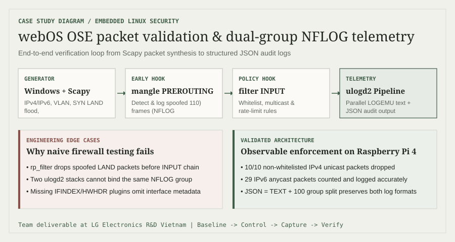

Lab webOS OSE kéo dài bốn tuần, từ kích hoạt firewall trong kernel đến kiểm thử chính sách IPv4/IPv6 và telemetry NFLOG có cấu trúc trên Raspberry Pi 4.
Bối cảnhLG Electronics R&D Vietnam
Phạm viNhóm 6 thành viên · 4 tuần
Nền tảngwebOS OSE · Raspberry Pi 4
Trọng tâmKiểm soát · kiểm thử · bằng chứng
01 / Thách thức
Một rule firewall chỉ hữu ích khi hành vi của nó có thể được chứng minh.
Kiểm soát bảo mật Linux nhúng trải trên nhiều lớp: hệ điều hành build bằng Yocto, hỗ trợ Netfilter trong kernel, chính sách userspace, định danh mạng và logging. Mục tiêu lab không chỉ là viết rule, mà còn chứng minh lưu lượng hợp lệ được đi qua, lưu lượng bị cấm được chặn và quyết định để lại bằng chứng sử dụng được.
Lưu ý phạm vi
Bốn báo cáo tuần ghi nhận công việc của nhóm thực tập sáu thành viên. Mình trình bày đây là sản phẩm nhóm có phần đóng góp của mình, không nhận là công việc cá nhân, đồng thời tách số đo khỏi diễn giải.
Nhóm mình dùng cùng một vòng lặp bằng chứng cho mô phỏng tấn công và lưu lượng hợp lệ. Việc thiết lập baseline trước giúp phân biệt kiểm soát bảo mật hoạt động đúng với đường truyền mạng bị lỗi.
Windows + Scapy→IPv4 / IPv6 / VLAN→Netfilter / nftables→NFLOG→Bằng chứng text + JSON

Tạo có kiểm soát lưu lượng hợp lệ, không hợp lệ và giả mạo từ máy Windows.
Quan sát việc nhận gói trước khi áp dụng rule để xác nhận kết nối và dữ liệu thử.
Áp dụng các kiểm soát firewall rõ ràng rồi lặp lại cùng mẫu lưu lượng.
So sánh bộ đếm, đầu ra receiver, journal log và bản ghi ulogd2 có cấu trúc.
03 / Quá trình bốn tuần
Kiểm soát trước, ngữ cảnh và telemetry sau.
Tuần 01
Kernel & Netfilter
Build webOS OSE cho Raspberry Pi 4 và bật các module Netfilter phục vụ rate limit, connection matching, dải địa chỉ, logging, theo dõi nguồn gần đây, TCP MSS, hash limit và accounting. Kiểm thử SYN flood, LAND, Smurf và mẫu nguồn ngẫu nhiên.
Tuần 02
IPv6, VLAN & định danh
Tạo quy trình sender/receiver bằng Python và Scapy, kiểm tra interface từ xa, thay đổi IPv4/IPv6, VLAN ID và MAC, rồi kiểm thử whitelist với định danh hợp lệ và giả mạo.
Tuần 03
Ngữ nghĩa lưu lượng
So sánh hành vi unicast, broadcast, multicast và anycast trên IPv4 lẫn IPv6. Kết hợp group membership với chính sách firewall để không phụ thuộc một lớp thực thi duy nhất.
Tuần 04
Khả năng quan sát có cấu trúc
Tích hợp ulogd2 với NFLOG và tạo song song đầu ra LOGEMU dễ đọc cùng bản ghi JSON cho SYN flood, broadcast, multicast, Smurf và các ca audit outbound hợp lệ.
04 / Kiểm chứng
Đo hành vi thực tế, không dừng ở lời khẳng định “máy mình chạy được”.
10 / 10Gói thử IPv4 unicast bị drop khi nguồn không thuộc whitelist29Gói IPv6 anycast được chấp nhận và ghi nhận bởi bộ đếm rule2 định dạngĐầu ra sự kiện bảo mật dạng text và JSON song song từ ulogd2
Ca lưu lượng
Kiểm soát
Kết quả quan sát
IPv4 unicast
Whitelist nguồn
Bộ thử 10 gói ngoài whitelist bị drop
IPv4 broadcast
Chính sách cổng dịch vụ
Lưu lượng dịch vụ được phê duyệt được chấp nhận
IPv4 multicast
Rule theo group membership
Chỉ lưu lượng thuộc nhóm mong đợi được chấp nhận
IPv6 unicast
Whitelist nguồn IPv6
Nguồn ngoài whitelist bị drop
IPv6 multicast
Rule theo nhóm
Nhóm đích được phép; nhóm khác bị drop
IPv6 anycast
Chính sách đích + bộ đếm
Được chấp nhận; ghi nhận 29 gói
05 / Quyết định kỹ thuật
Những bài học đáng giá nằm ở các trường hợp biên.
Xung đột listener
Tách các nhóm NFLOG
Hai stack ulogd2 không thể bind cùng một nhóm NFLOG. Nhóm mình tách pipeline text và JSON sang các nhóm khác nhau theo quy ước JSON = TEXT + 100 đã được ghi chép.
Thiếu metadata
Sửa thứ tự plugin
Bản ghi JSON thiếu metadata của interface đầu vào. Thêm IFINDEX và HWHDR trước IP2STR cung cấp dữ liệu cần để phân giải tên interface.
Thiết kế kiểm thử
Khớp với ngữ nghĩa của rule
Một lần quét SYN mặc định của nmap không kích hoạt rule chỉ dành cho RST. Nhóm mình điều chỉnh lưu lượng và cách kiểm chứng thay vì xem bộ đếm bằng không là bằng chứng.
Hành vi kernel
Ghi log giả mạo ở hook sớm
Reverse-path filtering của Linux có thể drop lưu lượng LAND giả mạo trước các hook phía sau. Vì vậy khả năng quan sát spoofing cần đặt ở mangle/PREROUTING, không chỉ ở chain hạ nguồn.
Bước tiếp theo
Đưa telemetry vào vận hành với chính sách lưu giữ bằng logrotate và accounting dựa trên nfacct, sau đó ánh xạ sự kiện có cấu trúc vào pipeline phát hiện của SIEM.
06 / Đúc kết
Điều dự án chứng minh.
Công việc này kết nối kỹ thuật Linux nhúng với tư duy phân tích: hiểu đường đi gói tin, đặt mục tiêu kiểm soát có thể bác bỏ, tạo lưu lượng lặp lại được và lưu bằng chứng. Nó giúp mình nâng cao khả năng tìm nguyên nhân khi một kiểm soát bảo mật có vẻ không hoạt động — từ ngữ nghĩa lưu lượng, thứ tự hook, lọc trong kernel đến kiến trúc logging.
Repository liên quan firewall-manager ↗ tiếp tục hướng nghiên cứu giúp việc quản trị firewall Linux dễ kiểm tra hơn.